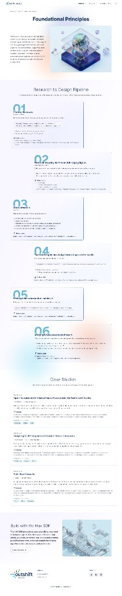

We build foundational design principles and frameworks for AI-human interaction. Our research lab translates high-level insights into practical patterns and solutions that prioritize user control, clarity, and effective collaboration between humans and AI agents.

A collaborative design process that transforms raw research into practical design guidance and reusable patterns.
Define the phenomenon that you want to explore, not the feature or product.
Build a grounded understanding of what's already happening and what's starting to happen.
Transform raw findings into conceptual frameworks and actionable design principles.
Validate each pattern through heuristic evaluation, usability testing, and expert review to ensure the bridge between research and design guidance is sound.
Patterns are implemented in interactive prototypes and tested with real users, iterating until they meet our quality bar for clarity, effectiveness, and adoptability.
Validated patterns are published to the Hax pattern library with full documentation, code examples, and usage guidelines. The library evolves as new research emerges.
Real-world applications of our foundational principles in enterprise and research contexts.
Case Study 01
Building transparent AI systems that assess infrastructure changes, verify modifications, conduct automated testing, and manage approval workflows — all while maintaining clear visibility into agent decision-making and human oversight.
Problem
Infrastructure changes carry high risk, but manual impact assessment, testing, and approval processes create bottlenecks. Organizations struggle to balance automation speed with safety and accountability, often lacking visibility into what AI agents are actually evaluating and why certain changes get flagged.
Design principles applied
Case Study 02
When multiple agents collaborate within a composite system, understanding who did what — and why — becomes critical. This case study explores transparency design patterns for multi-agent workflows in enterprise settings.
Problem
Multi-agent systems create opaque decision chains where audit trails, decision attribution, and user-facing explanations must maintain clarity without overwhelming cognitive load. Users lose trust when they can't trace outcomes to specific agents.
Design principles applied
Case Study 03
When agents trigger other agents, cascading effects can quickly move beyond human oversight. This study maps the interaction patterns of multi-agent cascades and proposes design guardrails to keep humans meaningfully in the loop.
Problem
Cascading agent actions can amplify errors, create unintended consequences, and move beyond human oversight. Without circuit breakers, approval gates, and progressive disclosure, organizations risk losing control over automated workflows.
Design principles applied